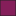
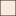

<!doctype html>
<html lang="en">
    <head>
        <meta charset="utf-8">
        <meta http-equiv="X-UA-Compatible" content="IE=edge">
        <meta name="viewport" content="initial-scale=1,user-scalable=no,maximum-scale=1,width=device-width">
        <meta name="mobile-web-app-capable" content="yes">
        <meta name="apple-mobile-web-app-capable" content="yes">
        <link rel="stylesheet" href="css/leaflet.css"><link rel="stylesheet" href="css/L.Control.Locate.min.css">
        <link rel="stylesheet" href="css/qgis2web.css"><link rel="stylesheet" href="css/fontawesome-all.min.css">
        <link rel="stylesheet" href="css/leaflet-search.css">
        <link rel="stylesheet" href="css/leaflet-control-geocoder.Geocoder.css">
        <style>
        html, body, #map {
            width: 100%;
            height: 100%;
            padding: 0;
            margin: 0;
        }
        </style>
        <title>Ground water potential zones</title>
    </head>
    <body>
        <div id="map">
        </div>
        <script src="js/qgis2web_expressions.js"></script>
        <script src="js/leaflet.js"></script><script src="js/L.Control.Locate.min.js"></script>
        <script src="js/leaflet.rotatedMarker.js"></script>
        <script src="js/leaflet.pattern.js"></script>
        <script src="js/leaflet-hash.js"></script>
        <script src="js/Autolinker.min.js"></script>
        <script src="js/rbush.min.js"></script>
        <script src="js/labelgun.min.js"></script>
        <script src="js/labels.js"></script>
        <script src="js/leaflet-control-geocoder.Geocoder.js"></script>
        <script src="js/leaflet-search.js"></script>
        <script src="data/Groundwaterpotentialzones_1.js"></script>
        <script>
        var map = L.map('map', {
            zoomControl:true, maxZoom:28, minZoom:6
        })
        var hash = new L.Hash(map);
        map.attributionControl.setPrefix('<a href="https://github.com/tomchadwin/qgis2web" target="_blank">qgis2web</a> &middot; <a href="https://leafletjs.com" title="A JS library for interactive maps">Leaflet</a> &middot; <a href="https://qgis.org">QGIS</a>');
        var autolinker = new Autolinker({truncate: {length: 30, location: 'smart'}});
        function removeEmptyRowsFromPopupContent(content, feature) {
         var tempDiv = document.createElement('div');
         tempDiv.innerHTML = content;
         var rows = tempDiv.querySelectorAll('tr');
         for (var i = 0; i < rows.length; i++) {
             var td = rows[i].querySelector('td.visible-with-data');
             var key = td ? td.id : '';
             if (td && td.classList.contains('visible-with-data') && feature.properties[key] == null) {
                 rows[i].parentNode.removeChild(rows[i]);
             }
         }
         return tempDiv.innerHTML;
        }
        document.querySelector(".leaflet-popup-pane").addEventListener("load", function(event) {
          var tagName = event.target.tagName,
            popup = map._popup;
          // Also check if flag is already set.
          if (tagName === "IMG" && popup && !popup._updated) {
            popup._updated = true; // Set flag to prevent looping.
            popup.update();
          }
        }, true);
        L.control.locate({locateOptions: {maxZoom: 19}}).addTo(map);
        var bounds_group = new L.featureGroup([]);
        function setBounds() {
            if (bounds_group.getLayers().length) {
                map.fitBounds(bounds_group.getBounds());
            }
        }
        map.createPane('pane_Positronnolabelsretina_0');
        map.getPane('pane_Positronnolabelsretina_0').style.zIndex = 400;
        var layer_Positronnolabelsretina_0 = L.tileLayer('https://a.basemaps.cartocdn.com/light_nolabels/{z}/{x}/{y}@2x.png', {
            pane: 'pane_Positronnolabelsretina_0',
            opacity: 1.0,
            attribution: '<a href="https://cartodb.com/basemaps/">Map tiles by CartoDB, under CC BY 3.0. Data by OpenStreetMap, under ODbL.</a>',
            minZoom: 6,
            maxZoom: 28,
            minNativeZoom: 0,
            maxNativeZoom: 20
        });
        layer_Positronnolabelsretina_0;
        map.addLayer(layer_Positronnolabelsretina_0);
        function pop_Groundwaterpotentialzones_1(feature, layer) {
            var popupContent = '<table>\
                    <tr>\
                        <th scope="row">DN</th>\
                        <td>' + (feature.properties['DN'] !== null ? autolinker.link(feature.properties['DN'].toLocaleString()) : '') + '</td>\
                    </tr>\
                    <tr>\
                        <th scope="row">Class</th>\
                        <td>' + (feature.properties['Class'] !== null ? autolinker.link(feature.properties['Class'].toLocaleString()) : '') + '</td>\
                    </tr>\
                </table>';
            layer.bindPopup(popupContent, {maxHeight: 400});
            var popup = layer.getPopup();
            var content = popup.getContent();
            var updatedContent = removeEmptyRowsFromPopupContent(content, feature);
            popup.setContent(updatedContent);
        }

        function style_Groundwaterpotentialzones_1_0(feature) {
            switch(String(feature.properties['Class'])) {
                case 'Excellent':
                    return {
                pane: 'pane_Groundwaterpotentialzones_1',
                opacity: 1,
                color: 'rgba(35,35,35,1.0)',
                dashArray: '',
                lineCap: 'butt',
                lineJoin: 'miter',
                weight: 1.0, 
                fill: true,
                fillOpacity: 1,
                fillColor: 'rgba(3,5,26,1.0)',
                interactive: true,
            }
                    break;
                case 'Fair':
                    return {
                pane: 'pane_Groundwaterpotentialzones_1',
                opacity: 1,
                color: 'rgba(35,35,35,1.0)',
                dashArray: '',
                lineCap: 'butt',
                lineJoin: 'miter',
                weight: 1.0, 
                fill: true,
                fillOpacity: 1,
                fillColor: 'rgba(133,30,90,1.0)',
                interactive: true,
            }
                    break;
                case 'Good':
                    return {
                pane: 'pane_Groundwaterpotentialzones_1',
                opacity: 1,
                color: 'rgba(35,35,35,1.0)',
                dashArray: '',
                lineCap: 'butt',
                lineJoin: 'miter',
                weight: 1.0, 
                fill: true,
                fillOpacity: 1,
                fillColor: 'rgba(241,97,68,1.0)',
                interactive: true,
            }
                    break;
                case 'Poor':
                    return {
                pane: 'pane_Groundwaterpotentialzones_1',
                opacity: 1,
                color: 'rgba(35,35,35,1.0)',
                dashArray: '',
                lineCap: 'butt',
                lineJoin: 'miter',
                weight: 1.0, 
                fill: true,
                fillOpacity: 1,
                fillColor: 'rgba(250,235,221,1.0)',
                interactive: true,
            }
                    break;
            }
        }
        map.createPane('pane_Groundwaterpotentialzones_1');
        map.getPane('pane_Groundwaterpotentialzones_1').style.zIndex = 401;
        map.getPane('pane_Groundwaterpotentialzones_1').style['mix-blend-mode'] = 'normal';
        var layer_Groundwaterpotentialzones_1 = new L.geoJson(json_Groundwaterpotentialzones_1, {
            attribution: '',
            interactive: true,
            dataVar: 'json_Groundwaterpotentialzones_1',
            layerName: 'layer_Groundwaterpotentialzones_1',
            pane: 'pane_Groundwaterpotentialzones_1',
            onEachFeature: pop_Groundwaterpotentialzones_1,
            style: style_Groundwaterpotentialzones_1_0,
        });
        bounds_group.addLayer(layer_Groundwaterpotentialzones_1);
        map.addLayer(layer_Groundwaterpotentialzones_1);
            var title = new L.Control();
            title.onAdd = function (map) {
                this._div = L.DomUtil.create('div', 'info');
                this.update();
                return this._div;
            };
            title.update = function () {
                this._div.innerHTML = '<h2>Ground water potential zones</h2>';
            };
            title.addTo(map);
            var abstract = new L.Control({'position':'bottomright'});
            abstract.onAdd = function (map) {
                this._div = L.DomUtil.create('div',
                'leaflet-control abstract');
                this._div.id = 'abstract'

                    abstract.show();
                    return this._div;
                };
                abstract.show = function () {
                    this._div.classList.remove("abstract");
                    this._div.classList.add("abstractUncollapsed");
                    this._div.innerHTML = 'This is a web map showing ground water potential zones in Kisumu. From exellent to poor';
            };
            abstract.addTo(map);
        var osmGeocoder = new L.Control.Geocoder({
            collapsed: true,
            position: 'topleft',
            text: 'Search',
            title: 'Testing'
        }).addTo(map);
        document.getElementsByClassName('leaflet-control-geocoder-icon')[0]
        .className += ' fa fa-search';
        document.getElementsByClassName('leaflet-control-geocoder-icon')[0]
        .title += 'Search for a place';
        var baseMaps = {};
        L.control.layers(baseMaps,{'Ground water potential zones<br /><table><tr><td style="text-align: center;"></td><td>Excellent</td></tr><tr><td style="text-align: center;"></td><td>Fair</td></tr><tr><td style="text-align: center;"></td><td>Good</td></tr><tr><td style="text-align: center;"></td><td>Poor</td></tr></table>': layer_Groundwaterpotentialzones_1,"Positron [no labels] (retina)": layer_Positronnolabelsretina_0,}).addTo(map);
        setBounds();
        map.addControl(new L.Control.Search({
            layer: layer_Groundwaterpotentialzones_1,
            initial: false,
            hideMarkerOnCollapse: true,
            propertyName: 'Class'}));
        document.getElementsByClassName('search-button')[0].className +=
         ' fa fa-binoculars';
        </script>
    </body>
</html>
